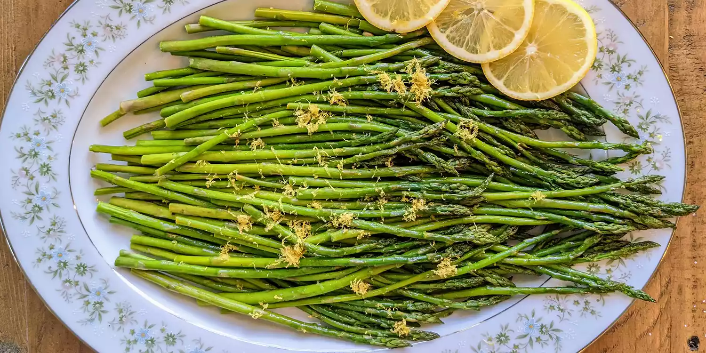

Oven Roasted Asparagus

Description
I thought I had Arborio rice but I obviously did not. Orzo pasta makes a
delightful risotto with help from
spring veggies like asparagus and peas.
For service, garnish with some freshly grated Grana Padano cheese and
chopped parsley.
Ingredients
-
2 ½ cups vegetarian chicken-flavored broth
- 2 cups low-sodium vegetable broth
- 3 tablespoons unsalted butter
- 1 tablespoon extra-virgin olive oil
- ½ medium yellow onion, diced
Steps
-
Pour vegetarian chicken broth and vegetable broth into a medium saucepan
over over medium heat; bring to a boil. Reduce heat to simmer and cover
until needed.
-
Melt butter and oil together in a 12-inch skillet over medium heat. Add
onion, pepper flakes, and a pinch of sea salt and pepper. Cook and stir
for about 4 minutes before adding the zucchini and another pinch of sea
salt. Stir and continue to cook for about 3 minutes. Next, stir in the
dry orzo pasta and continue to cook, stirring often, for 5 minutes.
-
Pour in wine, stirring as it bubbles until the rapid bubbling stops.
Pour in hot broth and bring to a boil. Reduce heat slightly and add
cheese rind and 1/2 teaspoon sea salt. Cook and stir until a good
portion of the liquid has been soaked up by the orzo, about 10 minutes.
Stir in asparagus and frozen peas and continue to simmer until nearly
all of the liquid is gone and orzo is fully cooked, about 5 minutes.
Remove from the heat.
-
Stir in Grana Padano cheese, parsley, lemon zest and juice, and desired
amount of cracked pepper. Remove and discard cheese rind. Taste and
adjust salt and pepper as desired.